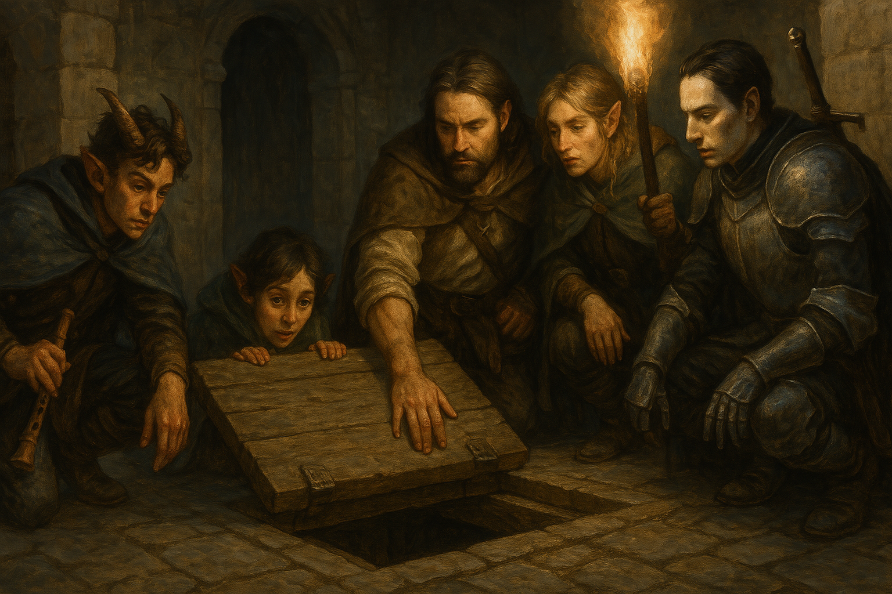

Chapter 1: Underneath the Theatre
Lurking Dangers

Lurking Dangers
15048.12.04
回到 Marcus 宅邸後，冒險者們討論，決定先去一趟崔尼斯劇院廢墟的地底。根據小黑屋得到的訊息，那裡似乎是拉索斯教在麥克嵩的據點。Marcus 決定先待在宅邸等待大家，同時也照看著還沒清醒的伊。
踏出 Marcus 家門口不久後，冒險者注意到了一個鬼祟的身影，躲在 Marcus 家外的牆邊。Tweeter 一看，發現這個人是昨晚出現在伊面前的那名魔人，似乎是伊的徒弟。他派出他的夸塞魔，擋住魔人的去路，同時，Paladin 使出了他的新能力：從他的手指頭噴出蜘蛛絲，要拉倒魔人—他已和將自己精神注入他身體內的 Anna 達成協議，成為蜘蛛神教的聖騎士。接著冒險者們和魔人嘗試對話。魔人的名字叫 Lott，他似乎很擔心伊，但又因為伊告誡他不可以跑來 Marcus 家附近，所以才這麼不知所措。話說到一半，Marcus 的家門打開了，Marcus 走了出來，如慈父般的看著 Lott，要他不要擔心，他會好好照顧伊，同時也希望冒險者們可以幫忙照顧 Lott，他還很年輕，而且身為非人類，在麥克嵩肯定不好過。Lott 結結巴巴，但還是對 Marcus 心懷感激。
在冒險者們爭論著該如何「照顧」Lott 時，Lott 趁著 Marcus 走回宅邸的那一刻，也潛入了房子。跟著 Marcus 走上樓梯，Marcus 頭也沒回，便向 Lott 表明自己知道他在後面。Marcus 帶著 Lott 來見伊。伊雖然醒來了，但狀況似乎還是不太穩定。Marcus 和 Marianne 將房間留給師徒兩人，Lott 表達了對伊的關心，希望他好好的。一段時間後，Lott 聽見了敲門聲。Marcus 將 Lott 帶了出去，並給他一顆魔法球，表示按住他，就能找到剛剛那群冒險者的位置。
冒險者們發現 Lott 不見了，心裡倒也輕鬆。他們準備前往崔尼斯劇院的遺址，在路邊發現了一家二手書店。Tweeter 決定將之前在伊的秘密基地偷來的宗教書拿去賣，但店小二開的價錢讓他不滿意。Paladin 試圖透過使用紫羅蘭的勳章發揮點影響力，沒想到店小二抱著 Tweeter 遞給他的書，一手搶來了 Paladin 的勳章，便往外跑去。Tweeter 趕緊追上，並將店小二擊暈。書和勳章從店小二手中飛出，路邊圍觀的群眾搶成一片。Tweeter 情急之下，攻擊群眾。除了三名失去意識且不穩定的群眾外，也有好幾名民眾昏去。Tweeter、華生和 Paladin 趕緊前去穩定他們的傷勢。不久後，這些昏迷的民眾紛紛坐起身體，大家對眼前看見的異狀感到疑惑，彷彿這只是一場魔法秀一樣。
倉皇離開尷尬的現場，大家前往崔尼斯劇院的廢墟。這時機警的 Tweeter 發現身後不遠處似乎有個人正在跟著他們。他一回頭，看見一名提著手提箱的貓人正朝著他們走來。他試圖和貓人溝通，想問清他的來意，貓人和 Tweeter 兩人之間很緊繃，衝突似乎一觸即發。貓人從手提箱拿出針筒，走向 Tweeter。在 Tweeter 發出攻擊的那一刻，終於趕上，且躲藏在一旁的 Lott 趕緊跳出解救貓人的性命，並嘗試和 Tweeter 溝通。Lott 表示雙方應該都沒有惡意，不需要馬上互相傷害，Tweeter 的情緒才慢慢緩和。但此時貓人已經不見了。
Lott 加入冒險者們，在崔尼斯劇院的廢墟尋找出入口。大家從通往地下，免強還能開的門走了進去。走下樓梯，地道內，畫滿記載崔尼斯教歷史的壁畫和文字，但隨著越走越裡面，壁畫消失了，剩下的是有些原始的地道。
冒險者們發現，在前方似乎有個人影，靠在牆邊休息。Lott 出於好奇心，趨前探視。他先利用魔法，嘗試在這人形生物耳邊發出些聲音，但那人似乎沒什麼反應，於是 Lott 便直接走到他旁邊試圖和他說話。
這名靠在牆邊的生物是名地侏女子，是從他的家鄉突然被傳送過來的。他表示自己的名字叫 Caramip Mango，對於這世界的事情不甚了解。冒險團隊和 Caramip 互相確認沒有惡意後，便決定結伴同行。
華生透過魔法，召喚出了一顆隱形的魔眼，偵查前方。他發現在長廊的盡頭，似乎有個木柵欄，後面有兩隻他認不得的生物。大家在走到那裡時，Paladin 認出那是他曾遇過的拉茲特獸，但他只記得過去他的夥伴 Brock 曾被變成了這樣的生物，以及他的毛皮似乎可以做成隱形斗篷。至於怎麼變的？他也不清楚。
聽到他的毛皮可以拿來使用，Sugalu 便拿出他的武器，嘗試戳弄拉茲特獸的皮膚，但牠的皮膚太厚，完全沒有被戳破的跡象，讓 Sugalu 覺得十分有意思。依照 Paladin 的說法，冒險者們判斷拉茲特獸似乎曾經是人型生物變成的，也許將它們放出來是給他們解脫，於是 Sugalu 便將木柵欄打開，拉茲特獸極為緩慢的向外走，慢得像是沒有移動一樣。華生也發現拉茲特獸似乎能看見他隱形的魔眼。
Caramip 覺得拉茲特獸十分有趣，想嘗試將其中一隻抱起來，卻發現牠的重量太重，完全沒有辦法抱起，於是便拿出自己的繩子，將牠環繞著，像是給馬綁上韁繩一般，然後坐到他身上，驅使他前進。不管和他喊話、拿食物在他面前晃，甚至是在他屁股後面點火，拉茲特獸的速度都沒有變快，直到華生施了魔法，才讓拉茲特獸前進的速度能被肉眼辨別，但還是慢到太不合理。
此時，Lott 突然發現在長廊的另一端，似乎傳來腳步聲。他趕緊爬到地洞的牆面，從暗中觀察，準備伏擊。Sugalu、Paladin 和華生躲在拉茲特獸柵欄旁的拐彎處，而 Caramip 嘗試攀著拉茲特獸的身體，想躲到他的腹面，Tweeter 則躲在另一隻拉茲特獸身體的下方。
兩名穿著深色斗篷的人類逐漸靠近，走在前方的人雙手緊抓著鎖鏈，眼神看向躲在牆角的 Lott，後方的人類則眼神緊盯著前方。一瞬間，前方的人類將鎖鏈甩向 Lott，狠狠地將他拽到地面，一場戰鬥就此展開。
狹窄的地道，Sugalu 衝向斗篷人的正前方，狠狠開打。大家輪番嘗試使出攻擊，但斗篷人似乎比大家想的還要耐打。前方的斗篷人在倒下之前，唸了一串咒語，兩隻拉茲特獸像發了瘋似的，以難以想像的速度向前暴衝，一口氣撞傷了兩、三名冒險者，與先前看到緩慢的不得了的拉茲特獸有著極大的反差。
眼看夥伴倒下，第二名斗篷人在傷了 Lott 一側的肩膀後，做了個小儀式，便將兩頭拉茲特獸連同自己一起傳送走了。肩關節受傷的 Lott 和失去潛在寵物的 Caramip 在這場戰鬥後，都感到十分失落。
眾人決定先行休息，然而 Tweeter 隱約感覺到 Sugalu 有點不對勁。他用自己的第三隻眼，發現 Sugalu 體內有股力量不斷膨脹，接近不受控制的程度。
心情較為平靜的 Lott 從背包內拿出要送給夥伴的小雕刻，剛遞給 Sugalu 一隻蝙蝠的雕刻時，他便看見 Sugalu 臉上的冷汗直冒，然後一陣強光，Sugalu 突然消失了。大家在腦中似乎聽見了 Sugalu 留下了「遺言」：「神王」。
神王是誰？還是什麼？現場只有 Paladin 曾經聽過。他簡單和大家說明了過去冒險時，他的夥伴 Usioni 以及他們曾加冕過那隻哥布林 King Knicol 的故事。
休息過後，大家繼續往前走。不遠處，華生叫出的老鼠，被一隻從旁邊冒出的鬼手抓去。大家彷彿還聽見老鼠被捏碎的聲音。大家小心翼翼地向前走，並找尋機會攻擊那隻手。Lott 利用幻象，再造出了一隻假的老鼠，吸引那隻手的注意。鬼手似乎上當了，Tweeter 趕緊攻擊，那隻手快速收回門內，消失了。
門內的空間似乎是個集會所，而大家在地道看見燒過的痕跡，似乎是從這裡開始燒起的。集會所現在只剩下被燒過的木櫃。大家翻了一下木櫃，找了每個人一件袍子。這和他們看見先前那兩位拉索斯教徒穿的似乎是同樣的款式。同時，經過調查，這裡似乎曾舉行過簡單的儀式，很有可能是拉索斯教的入教儀式。
離開集會所後，走了好一段，大家發現地道的天花板上似乎有個縫隙。推了一下，上方似乎是個門板，大家一個接著一個爬了上去，那是戶已經好一段時間沒人住的民宅。房間內，一張大床中間似乎凹陷了下去，直通地底，但不是他們上來的這一段。大家在民宅內探索，找到了些衣服，以及一組鼓組，上面有個署名：Brock。大家決定把這組鼓，同時也是這個家裡唯一可能值錢的東西帶走。
來到文創區，大家找了間樂器行，決定將 Brock 的鼓賣了。老闆認識 Brock，但他並不知道 Brock 去了哪裡，只能請大家下次見到 Brock 時，幫他打個招呼。Brock 的鼓組似乎可以賣些價錢，在 Tweeter 的感應下，他找到了幾個具有魔法的樂器。最終，Tweeter 買了一個有魔法的陶笛，Lott 則買了一隻笛子，看起來十分特別，有種妖精的味道。除了兩個樂器外，Brock 的鼓組還能再換一點錢。
Tweeter 也去了稍早去的那間書店，將他從伊那裡偷走的書賣給了老闆。